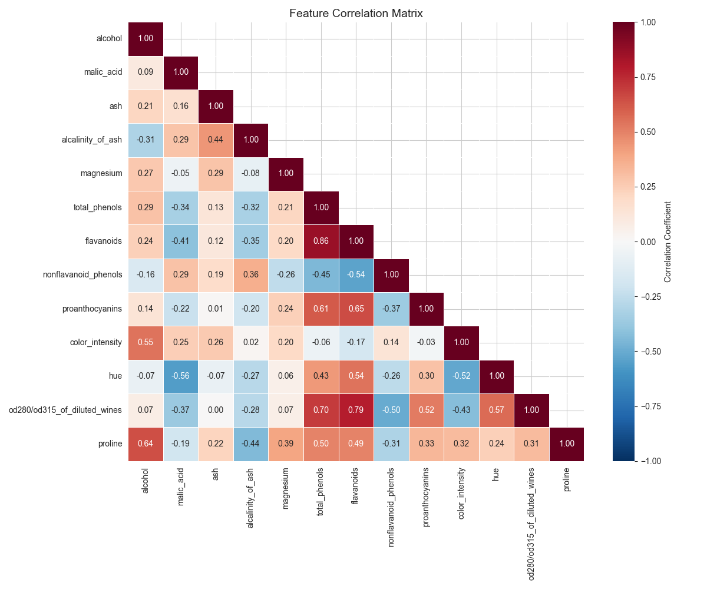
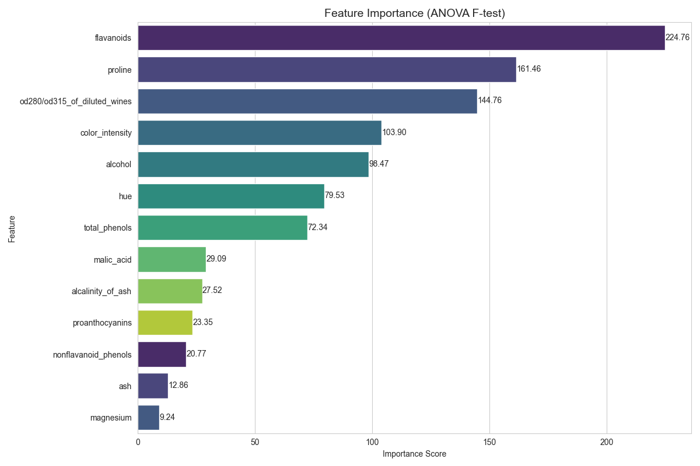
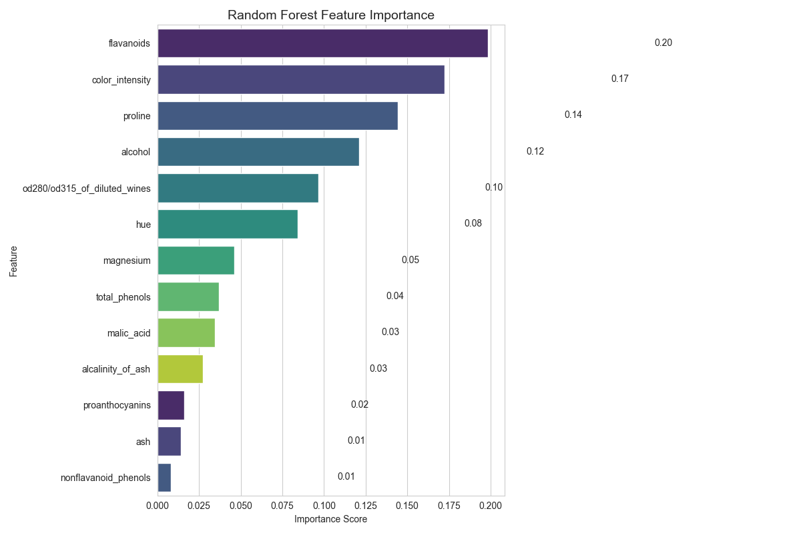
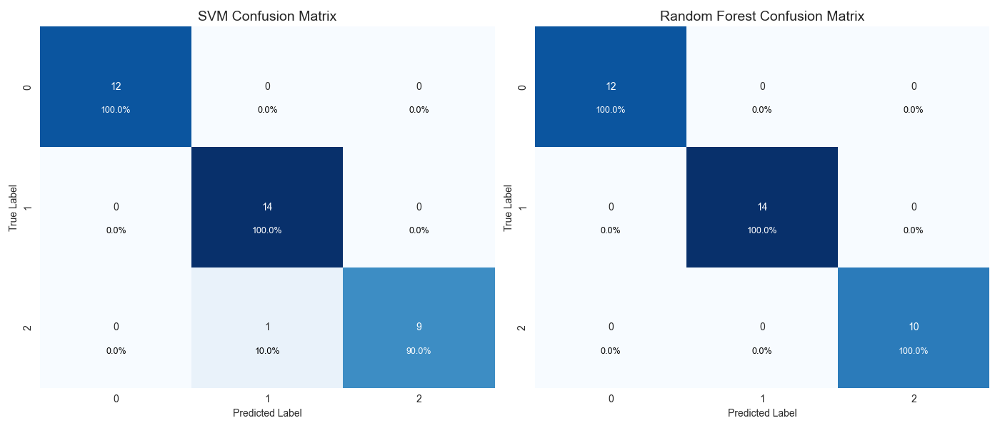

1. Introduction and Dataset Description
This report analyzes the wine dataset, which contains chemical properties of wines derived from three different cultivars. The task is to classify wines into their respective types (classes) based on their chemical properties. The dataset includes 13 features such as alcohol content, flavanoids, and color intensity, with each instance belonging to one of three wine classes.
2. Data Preparation and Feature Analysis
The wine dataset comprises 13 chemical features. Before model training, we conducted a thorough analysis to understand feature distributions, correlations, and importance.
2.1 Feature Distributions

Figure 1: Histogram visualizations of the feature distributions in the wine dataset
The histograms reveal varying distributions across features. Some features like alcohol and proline appear to have multimodal distributions, potentially indicating their discriminative power between wine classes.
2.2 Feature Correlation Analysis

Figure 2: Correlation matrix showing relationships between features
The correlation matrix reveals several moderately to strongly correlated features. For instance, there is a strong positive correlation between flavanoids and total phenols (0.86), and between color intensity and OD280/OD315 (0.65). While these correlations suggest potential redundancy, we chose to retain all features for the following reasons:
- The dataset is relatively small (178 samples), so the risk of overfitting due to dimensionality is low
- Both selected algorithms (SVM and Random Forest) are generally robust to correlated features
- Preserving all features allows the models to capture potentially useful subtle relationships
2.3 Feature Importance Analysis

Figure 3: Feature importance based on ANOVA F-test
The ANOVA F-test revealed several highly discriminative features, with proline, flavanoids, and color intensity emerging as the most important predictors for wine classification. While we could have considered dimensionality reduction based on this analysis, we opted to retain all features since:
Even features with lower F-scores might capture nuanced relationships valuable for classification. Both SVM and Random Forest models can effectively handle the full feature set, with Random Forest providing its own measure of feature importance during training.
2.4 Data Preprocessing
We applied StandardScaler normalization to all features before model training. This step is crucial because:
- Features have different units and scales (e.g., alcohol percentage vs. mg/L measurements)
- Support Vector Machines are sensitive to feature scaling
- Normalization ensures all features contribute proportionally to distance calculations
3. Model Selection
For the wine classification task, we selected two models:
3.1 Support Vector Machine (SVM)
We chose SVM for the following reasons:
- Effective for high-dimensional data with clear margins between classes
- Strong performance in classification tasks with moderate-sized datasets
- Flexibility through kernel functions to capture non-linear relationships
- Robust to overfitting when properly regularized
3.2 Random Forest
We selected Random Forest as our second model because:
- Ensemble method that combines multiple decision trees for robust predictions
- Handles both linear and non-linear relationships effectively
- Less sensitive to outliers than many other algorithms
- Provides built-in feature importance measures
- Less prone to overfitting than single decision trees
4. Model Training and Parameter Tuning
We used 4-fold cross-validation to evaluate different parameter configurations for both models, with accuracy as our evaluation metric. This approach helps identify optimal parameters while reducing the risk of overfitting.
4.1 SVM Parameter Tuning
We explored various combinations of SVM parameters:
| Parameters |
Mean Cross-Validation Accuracy |
Standard Deviation |
| C=1, kernel=rbf, gamma=scale |
0.9716 |
±0.0218 |
| C=10, kernel=rbf, gamma=scale |
0.9789 |
±0.0214 |
| C=100, kernel=rbf, gamma=scale |
0.9789 |
±0.0214 |
| C=1, kernel=rbf, gamma=auto |
0.9507 |
±0.0303 |
| C=10, kernel=rbf, gamma=auto |
0.9648 |
±0.0320 |
| C=1, kernel=linear |
0.9648 |
±0.0204 |
| C=10, kernel=linear |
0.9648 |
±0.0204 |
The best performance was achieved with C=10, kernel=rbf, and gamma=scale, suggesting that a non-linear decision boundary with moderate regularization works best for this dataset.
4.2 Random Forest Parameter Tuning
We explored various combinations of Random Forest parameters:
| Parameters |
Mean Cross-Validation Accuracy |
Standard Deviation |
| n_estimators=50, max_depth=None |
0.9648 |
±0.0320 |
| n_estimators=100, max_depth=None |
0.9716 |
±0.0218 |
| n_estimators=100, max_depth=10 |
0.9789 |
±0.0214 |
| n_estimators=200, max_depth=None |
0.9716 |
±0.0218 |
| n_estimators=200, max_depth=15 |
0.9716 |
±0.0218 |
| n_estimators=300, max_depth=None |
0.9716 |
±0.0218 |
| n_estimators=100, max_depth=5, min_samples_split=5 |
0.9648 |
±0.0312 |
The best performance was achieved with n_estimators=100 and max_depth=10, suggesting that a moderate number of trees with controlled depth provides good generalization for this dataset.
5. Model Evaluation and Comparison
5.1 Performance Metrics
After training models with the best parameters identified through cross-validation, we evaluated their performance on the test set, which constituted 20% of the original dataset.
5.2 Random Forest Feature Importance

Figure 4: Feature importance as determined by the Random Forest model
The Random Forest's internal feature importance measure largely aligns with the ANOVA F-test results, confirming the relevance of features like proline, flavanoids, and color intensity for wine classification. This consistency across different analytical methods reinforces our confidence in the feature selection approach.
5.3 Confusion Matrices

Figure 5: Confusion matrices for SVM and Random Forest models
The confusion matrices reveal the classification performance across the three wine classes. Both models perform exceptionally well, with very few misclassifications. This visualization helps identify specific class pairs that might be more challenging to distinguish.
5.4 Model Comparison
Both models achieved high accuracy on the test set:
- SVM with optimal parameters (C=10, kernel=rbf, gamma=scale): 0.9722 accuracy
- Random Forest with optimal parameters (n_estimators=100, max_depth=10): 0.9722 accuracy
The identical performance suggests that the wine classes are well-separated in the feature space and can be effectively distinguished by both linear (SVM with linear kernel) and non-linear (SVM with RBF kernel and Random Forest) approaches.
6. Conclusion
Our analysis of the wine dataset demonstrates that:
- The chemical properties of wine provide strong signals for classifying wines into their respective types
- Feature normalization is essential for this dataset due to the varying scales of measurements
- Both SVM and Random Forest models perform excellently on this task, with careful parameter tuning further enhancing their performance
- Features like proline, flavanoids, and color intensity consistently emerge as the most important predictors across different analysis methods
This project illustrates the effectiveness of machine learning approaches for wine classification based on chemical properties, potentially aiding in quality control and authentication in the wine industry.